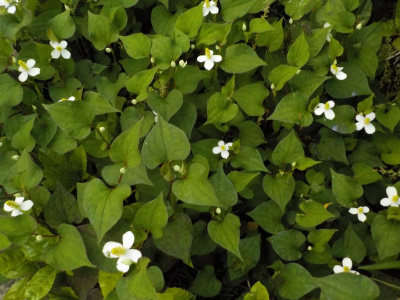
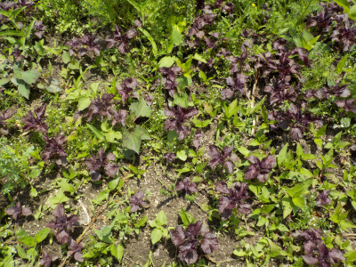
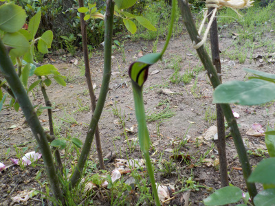
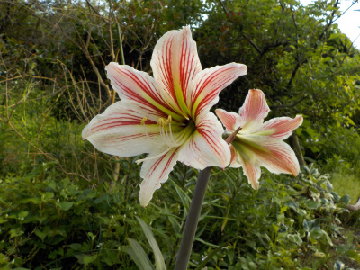
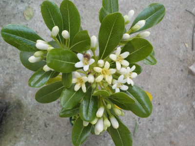
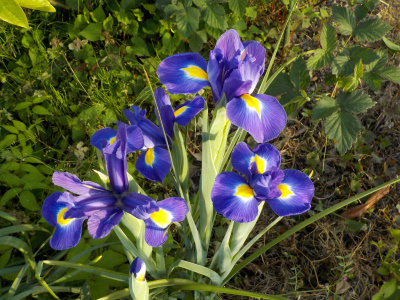
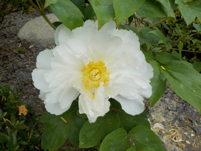
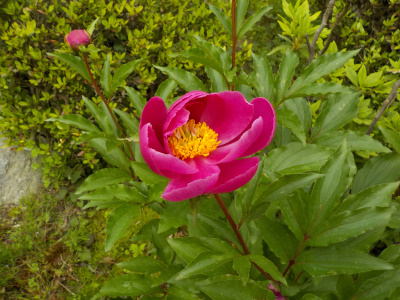

遊びで植物を育てよう
2023/05/25
ドクダミの絨毯を作りたいって思いました。

ドクダミが茂っていてキレイです。木や花の隙間に生えてるのは雑草な気分ですが、一面に沢山あるとグランドカバーになってて見栄えがいいです。
ドクダミをもっと増やしたいと思いましたが、スパースがないかな。
【5月TOP】
【日記TOP】
【園芸TOP】
2023/05/21
赤紫蘇の小さいのが沢山生えています。

去年のこぼれ種が沢山芽を出して育っています。沢山あるので何かに使いたいと思うんですが、アイデアが浮かばないです。
フリカケを作るとおかずを食べなくなるので作りたくない。ジュースは糖分が気になるし、料理に香料で入れるのは少ししか使わない。
あれこれ思っていると使わないので、なんでもかんでも作ることにします。
一度に沢山食べなければいいんだし、色んな食べ方をすれば問題ないでしょう。
【5月TOP】
【日記TOP】
【園芸TOP】
2023/05/20
庭にカラスビシャクが生えていました。

山に行くとこんな草がよく生えているんですが、庭でも生えるんですね。
抜きました。
【5月TOP】
【日記TOP】
【園芸TOP】
2023/05/20
アマリリスが咲きました。

花びらが厚くてボリュームがあっていいですね。
増やしたいけど、大きい鉢と置き場所が必要なので無理かな。
【5月TOP】
【日記TOP】
【園芸TOP】
2023/05/10
トベラの花が咲きました。

以前に庭に生えていた木の苗を、抜いて鉢で育てたものです。
なかなかいい感じの花が咲きました。
この木は観賞用にキープしようと思います。
【5月TOP】
【日記TOP】
【園芸TOP】
2023/05/05
アイリスが開花しました。

色が濃くて発色がいいですね。
【5月TOP】
【日記TOP】
【園芸TOP】
2023/05/05
こどもの日にボタンが見れました。

ボタンの開花時期が早くなっているので、ゴールデンウィークには花が散っていたんですが、今年は子供の日にボタンの花が見れました。
ちょっと形がイビツですね。生育不良で開花が遅くなったと思われます。
でも今年はボタンが長く楽しめて良かった。

ボタンの次は芍薬の時期です。
【5月TOP】
【日記TOP】
【園芸TOP】
過去の日記
【2024年5月の日記】
【2023年5月の日記】
【2022年5月の日記】
【2021年5月の日記】
【2020年5月の日記】
【2019年5月の日記】
【2018年5月の日記】
【2017年5月の日記】
【2016年5月の日記】
【2015年5月の日記】
【2014年5月の日記】
【2013年5月の日記】
【5月TOP】
【日記TOP】
【園芸TOP】
畑仕事じゃないよ。
【おいしいものを食べよう。】【たくさん寝よう。】
【ソロ活をしよう!】【季節感のあることをしよう。】【動画視聴はほどほどに。】【当サイトの全てのコンテンツは無断転載禁止です。】